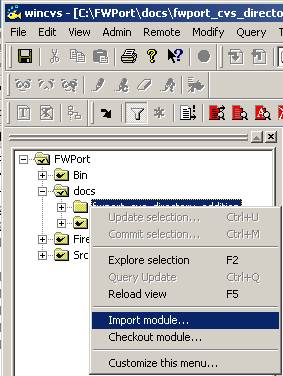
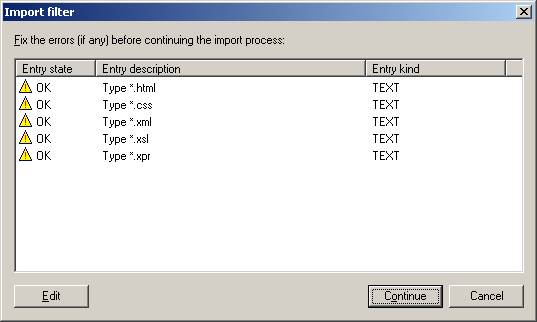
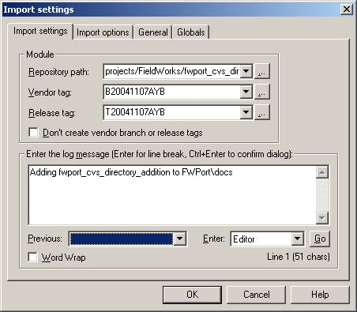
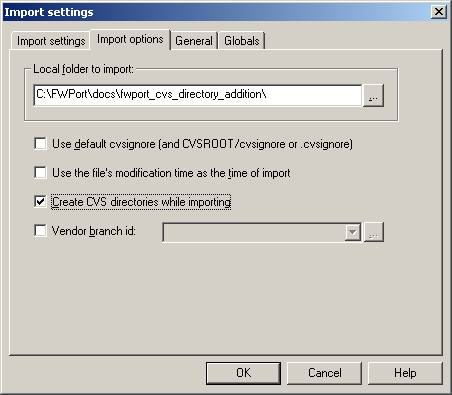

Table of Contents
This will explain what is required to be done to add a directory into the FWPort CVS repository. In the following example we want to add a newly created subdirectory of FWPort\docs called "fwport_cvs_directory_addition" to CVS. This basically consists of doing an import into CVS. Care has to be taken to import at the correct location as WinCVS will not supply the required path automatically.
-
Start WinCVS, ensure that Pageant is running and that your private key has been added to Pageant.
-
Right-click on the directory that needs to be added to CVS and select the "Import module..." item.
 -
You will be presented by the following import filter. In most circumstances you simply have to click "Continue". This dialog window indicates which files will be imported as "TEXT" and which one will be imported as "BINARY" into CVS.
 -
In the "Import settings" tab of the "Import settings" window set the "Repository path" to the same directory name prefixed by "projects/FieldWorks/". For example in our case where the imported directory is:
- C:\FWPort\docs\fwport_cvs_directory_addition
We would need to enter:
- projects/FieldWorks/docs/fwport_cvs_directory_addition
![[Note]](../images/admon/note.gif)
Note - The "Vendor Tag" is an initial branch tag and the "Release tag" is a "tag" tag.
- The path separators specified for the import repository location have to be the Unix ones "/" and not the DOS ones "\".
-
In the "Import options" tab of the "Import settings" window check the "Create the CVS directories while importing" checkbox.
 -
Click "OK" to do the import process.
|
|
Note |
|---|---|
|
From a remote location it was found that a more sure way to do an import when having problems getting the process completed is to import an empty directory structure with a small dummy text file in the deepest directory of each directory branch with no other files present. This will create the CVS directory structure and then you can add the files using the CVS add command rather than import. Once all of your files are added and committed you can then delete the dummy files. This is more tedious but was found to be necessary at times. |